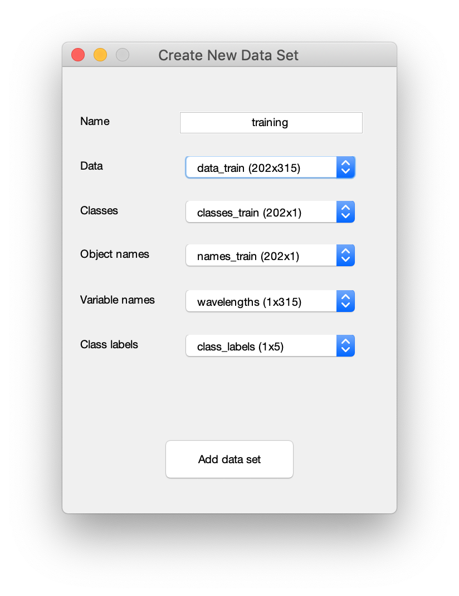
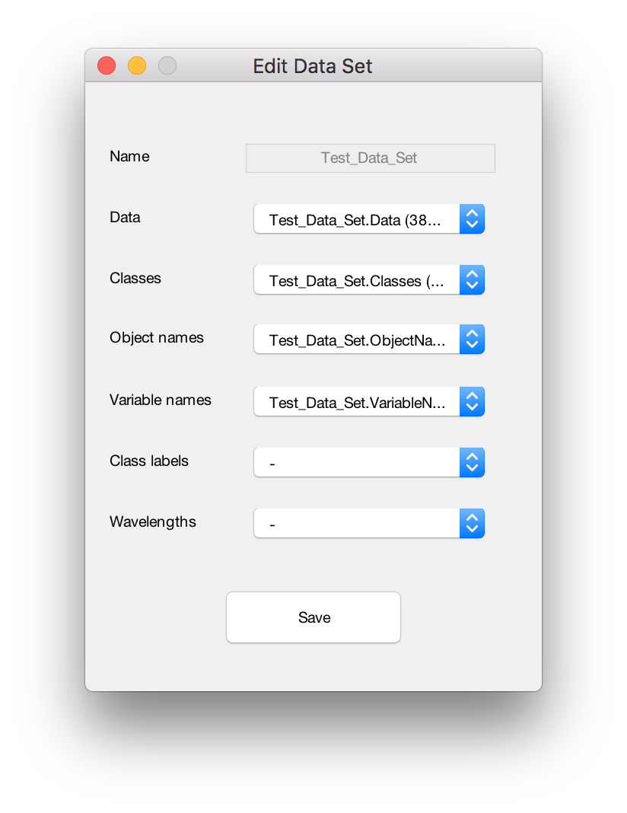
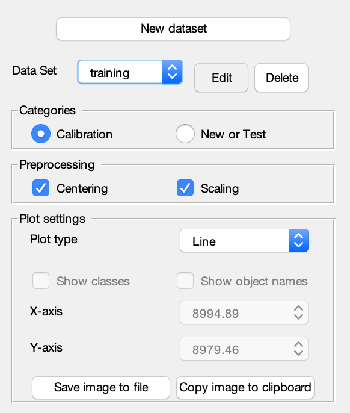
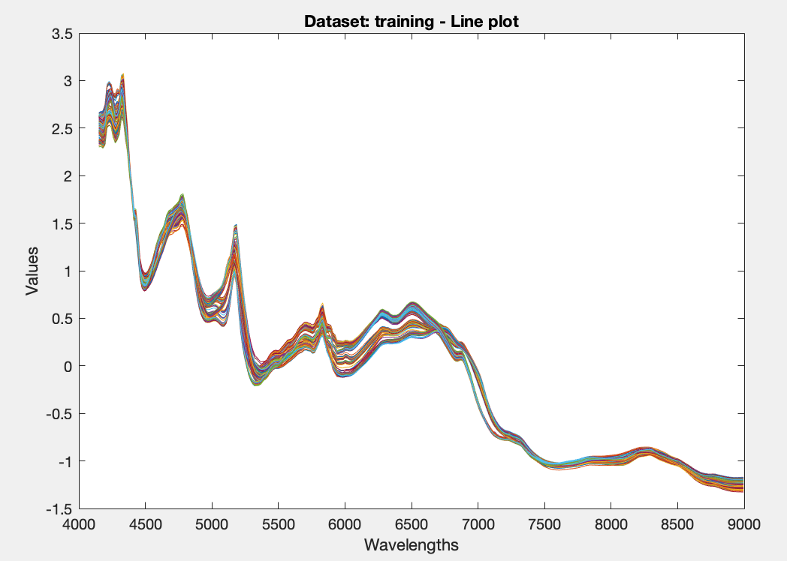
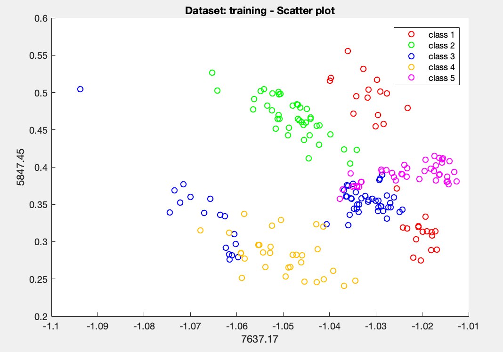
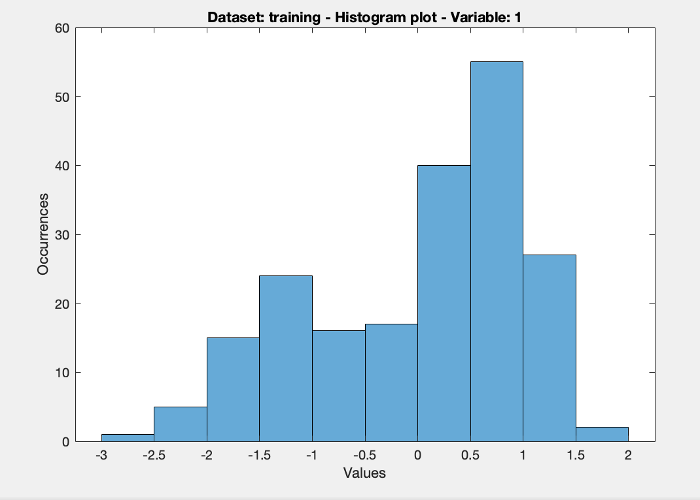
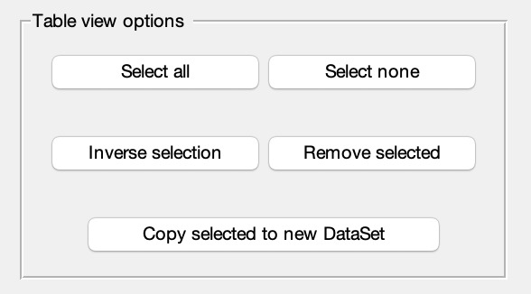
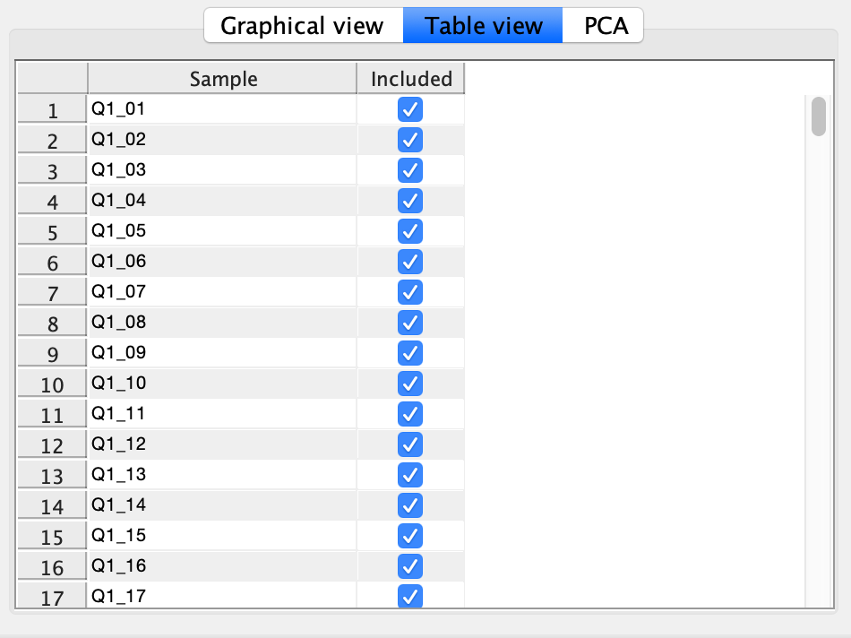

Load all neccessary data as variables into the current Matlab workspace.
On the Data tab click the New dataset button.
In the modal window input the Name of the new Data Set and select the Data matrix.
Optionally one can select variables for Classes, Object names, Variable names (or Wavelegths) and Class labels.
Warning: A DataSet object without Classes can not be used for Calibration!
Click the Add data set button to create the DataSet object.
The newly created object is now available in the Matlab workspace as a variable and in the Data Set drop-down list under the specified name.

Create New Data Set window
To edit or delete a DataSet object:
To edit a DataSet object select it in the Data Set drop-down list and click the Edit button.
In the modal window select the new variables for Data matrix, Classes, Object names, Variable names (or Wavelegths) or Class labels.
Data fields of the selected DataSet object are shown in the drop-down list as variables with a prefix (equal to DataSet's name).
Warning: A DataSet object without Classes can not be used for Calibration!
Click the Save button to apply changes to the DataSet object.
The modified object is now available in the Matlab workspace as a variable and in the Data Set drop-down list under the specified name.

Edit Data Set window
To delete a DataSet object select it in the Data Set drop-down list and click the Delete button.
To apply preprocessing and analyze a DataSet object:
Select the object of interest in the Data Set drop-down list.
Check one or both checkboxes in the Preprocessing section to apply mean-centering and scaling to the dataset.
One can indicate whether the dataset will be used for Training or as New/Test dataset.
3 types of plots are available in the Plot section - Scatter plot (for 2 selected variables), Line plot (for all samples) and histogram (for 1 selected variable).
One can use Save and Copy to clipboard to store the image in the Graphical view tab to disk or clipboard.

Data Tab. Preprocessing and Plot settings.



Data Tab. Graphical view.
To manipulate the samples in a DataSet object:
Select the object of interest in the Data Set drop-down list.
On the Table view sub-tab one can exclude or remove samples from the dataset.
Click on the checkbox near the sample's name to include\exclude individual samples.
Use the Select all, Select none and Inverse selection buttons to mass include\exclude the samples.
Use the Inverse by range and Inverse by class buttons to include\exclude the samples based on selected parameters.
To create a new DataSet object based on the selection click the Copy selected to new DataSet button.
To remove selected items completely the dataset click the Remove selected button.


Data Tab. Table view.
To apply Principal Component Analysis to a DataSet object:
Select the object of interest in the Data Set drop-down list on the Data tab.
On the PCA sub-tab on can choose the number of PCs and select PCs for the PCA Scores and Loadings plots.